scatter
Tutorial simple scatter
Tags: scatter, tutorial, tutorials.
using Makie
x = rand(10)
y = rand(10)
colors = rand(10)
scene = scatter(x, y, color = colors)
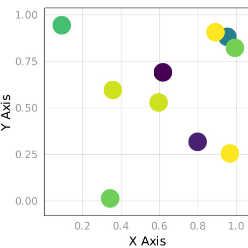
Tutorial markersize
Tags: markersize, scatter, tutorial, tutorials.
using Makie
x = 1:10
y = 1:10
sizevec = [s for s = 1:length(x)] ./ 10
scene = scatter(x, y, markersize = sizevec)
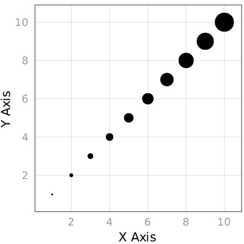
Interaction
Tags: 2d, linesegment, record, scatter.
using Makie
scene = Scene()
f(t, v, s) = (sin(v + t) * s, cos(v + t) * s)
time_node = Node(0.0)
p1 = scatter!(scene, lift(t-> f.(t, range(0, stop = 2pi, length = 50), 1), time_node))[end]
p2 = scatter!(scene, lift(t-> f.(t * 2.0, range(0, stop = 2pi, length = 50), 1.5), time_node))[end]
points = lift(p1[1], p2[1]) do pos1, pos2
map((a, b)-> (a, b), pos1, pos2)
end
linesegments!(scene, points)
N = 150
record(scene, "./docs/media/interaction.mp4", range(0, stop = 10, length = N)) do i
push!(time_node, i)
end
scatter colormap
Tags: 2d, colormap, scatter.
using Makie
scatter(rand(10), rand(10), color = rand(10))
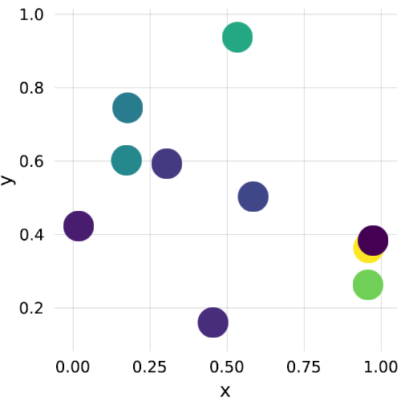
Subscenes
Tags: 2d, image, scatter, subscene.
using Makie
img = rand(RGBAf0, 100, 100)
scene = image(img, show_axis = false)
subscene = Scene(scene, IRect(100, 100, 300, 300))
scatter!(subscene, rand(100) * 200, rand(100) * 200, markersize = 4)
scene
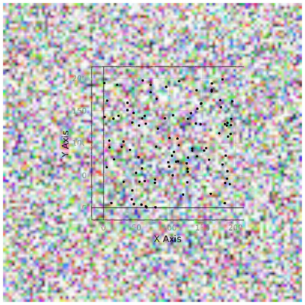
Hbox
Tags: 2d, hbox, lines, scatter.
using Makie
t = range(-122277.93103448274, stop=-14798.035304081845, length=29542)
x = -42 .- randn(length(t))
sc1 = scatter(t, x, color=:black, markersize=sqrt(length(t)/20))
sc2 = lines(t[1:end-1], diff(x), color = :blue)
hbox(sc2, sc1)

Animated Scatter
Tags: 2d, animated, record, scatter, updating.
using Makie
N = 10
r = [(rand(7, 2) .- 0.5) .* 25 for i = 1:N]
scene = scatter(r[1][:, 1], r[1][:, 2], markersize = 1, limits = FRect(-25/2, -25/2, 25, 25))
s = scene[end] # last plot in scene
record(scene, "./docs/media/animated_scatter.mp4", r) do m
s[1] = m[:, 1]
s[2] = m[:, 2]
end
The famous iris example
Tags: 2d, DataFrames, RDatasets, axis, scatter.
using Makie
using DataFrames, RDatasets # do Pkg.add.(["DataFrames", "RDatasets"]) if you don't have these packages installed
iris = dataset("datasets", "iris")
x = iris[:SepalWidth]
y = iris[:SepalLength]
scene = Scene()
colors = [:red, :green, :blue]
i = 1 #color incrementer
for sp in unique(iris[:Species])
idx = iris[:Species] .== sp
sel = iris[idx, [:SepalWidth, :SepalLength]]
scatter!(scene, sel[:,1], sel[:,2], color = colors[i], limits = FRect(1.5, 4.0, 3.0, 4.0))
global i = i+1
end
scene
axis = scene[Axis] # get axis
axis[:names][:axisnames] = ("Sepal width", "Sepal length")
scene

scatter
Tags: 2d, 3d, scatter.
using Makie
scatter(rand(20), rand(20), markersize = 0.03)
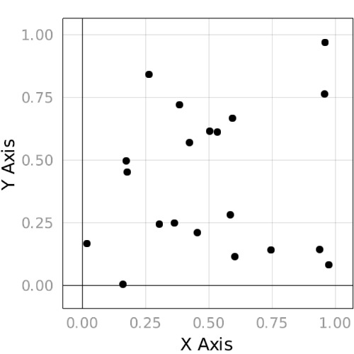
Marker sizes
Tags: 2d, 3d, scatter.
using Makie
scatter(rand(20), rand(20), markersize = rand(20)./20, color = to_colormap(:Spectral, 20))
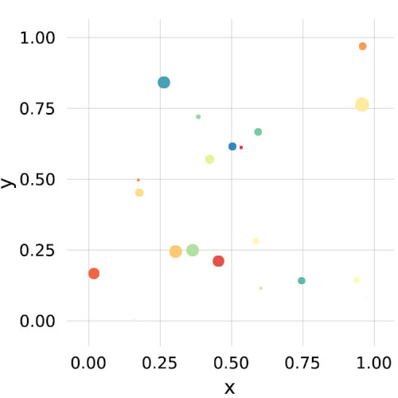
Connected Sphere
Tags: 3d, axis, lines, scatter, views.
using Makie
large_sphere = Sphere(Point3f0(0), 1f0)
positions = decompose(Point3f0, large_sphere)
linepos = view(positions, rand(1:length(positions), 1000))
scene = lines(linepos, linewidth = 0.1, color = :black)
scatter!(scene, positions, strokewidth = 10, strokecolor = :white, color = RGBAf0(0.9, 0.2, 0.4, 0.6))
scene

image scatter
Tags: 3d, image, scatter.
using Makie
using LinearAlgebra
scatter(
1:10, 1:10, rand(10, 10) .* 10,
rotations = normalize.(rand(Quaternionf0, 10*10)),
markersize = 1,
# can also be an array of images for each point
# need to be the same size for best performance, though
marker = Makie.logo()
)
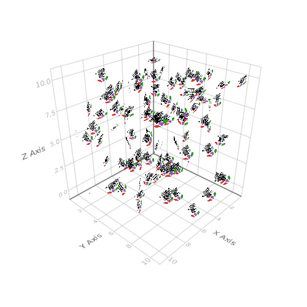
Stars
Tags: 3d, camera, glow, scatter, update_cam!.
using Makie
stars = 100_000
scene = Scene(backgroundcolor = :black)
scatter!(
scene,
(rand(Point3f0, stars) .- 0.5) .* 10,
glowwidth = 0.005, glowcolor = :white, color = RGBAf0(0.8, 0.9, 0.95, 0.4),
markersize = rand(range(0.0001, stop = 0.01, length = 100), stars),
show_axis = false
)
update_cam!(scene, FRect3D(Vec3f0(-2), Vec3f0(4)))
scene
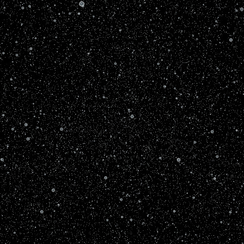
Unicode Marker
Tags: 3d, axis, marker, scatter.
using Makie
scene = Scene(resolution = (500, 500))
scatter!(scene, Point3f0[(1,0,0), (0,1,0), (0,0,1)], marker = [:x, :circle, :cross])
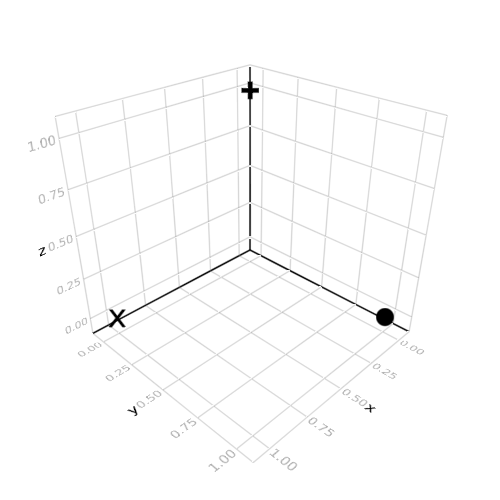
Interaction with Mouse
Tags: interaction, interactive, lines, marker, record, record_events, scatter.
using Makie
using LinearAlgebra
scene = Scene(raw = true, camera = cam2d!, resolution = (500, 500))
r = range(0, stop = 3, length = 4)
the_time = Node(time())
last_open = false
@async while true
global last_open
the_time[] = time()
# this is a bit awkward, since the isopen(scene) is false
# as long as the scene isn't displayed
last_open && !isopen(scene) && break
last_open = isopen(scene)
sleep(1/25)
end
pos = lift(scene.events.mouseposition, the_time) do mpos, t
map(LinRange(0, 2pi, 60)) do i
circle = Point2f0(sin(i), cos(i))
mouse = to_world(scene, Point2f0(mpos))
secondary = (sin((i * 10f0) + t) * 0.09) * normalize(circle)
(secondary .+ circle) .+ mouse
end
end
lines!(scene, pos)
p1 = scene[end]
p2 = scatter!(
scene,
pos, markersize = 0.1f0,
marker = :star5,
color = p1[:color],
)[end]
center!(scene)
t = Theme(raw = true, camera = campixel!)
b1 = button(t, "color")
b2 = button(t, "marker")
msize = slider(t, 0.1:0.01:0.5)
on(b1[end][:clicks]) do c
p1[:color] = rand(RGBAf0)
end
markers = ('π', '😹', '⚃', '◑', '▼')
on(b2[end][:clicks]) do c
p2[:marker] = markers[rand(1:5)]
end
on(msize[end][:value]) do val
p2[:markersize] = val
end
RecordEvents(hbox(
vbox(b1, b2, msize),
scene
), "./docs/media/interaction_with_mouse")
Mouse Picking
Tags: heatmap, interaction, interactive, record_events, scatter.
using Makie
img = rand(100, 100)
scene = Scene(resolution = (500, 500))
heatmap!(scene, img, scale_plot = false)
clicks = Node(Point2f0[(0,0)])
on(scene.events.mousebuttons) do buttons
if ispressed(scene, Mouse.left)
pos = to_world(scene, Point2f0(scene.events.mouseposition[]))
push!(clicks, push!(clicks[], pos))
end
return
end
scatter!(scene, clicks, color = :red, marker = '+', markersize = 10)
RecordEvents(scene, "./docs/media/mouse_picking")
sliders
Tags: interaction, record_events, scatter, slider, vbox.
using Makie
s1 = slider(LinRange(0.01, 1, 100), raw = true, camera = campixel!, start = 0.3)
s2 = slider(LinRange(-2pi, 2pi, 100), raw = true, camera = campixel!)
data = lift(s2[end][:value]) do v
map(LinRange(0, 2pi, 100)) do x
4f0 .* Point2f0(sin(x) + (sin(x * v) .* 0.1), cos(x) + (cos(x * v) .* 0.1))
end
end
p = scatter(data, markersize = s1[end][:value])
RecordEvents(
hbox(p, vbox(s1, s2), parent = Scene(resolution = (500, 500))),
"./docs/media/sliders"
)
Add and change points
Tags: center, heatmap, interaction, ispressed, on, record_events, scatter, to_world.
using Makie
using LinearAlgebra
img = rand(100, 100)
scene = Scene(scale_plot = false, resolution = (500, 500))
heatmap!(scene, img)
clicks = Node(Point2f0[(0, 0)])
blues = Node(Point2f0[])
on(scene.events.mousebuttons) do buttons
if ispressed(scene, Mouse.left)
pos = to_world(scene, Point2f0(scene.events.mouseposition[]))
found = -1
c = clicks[]
for i in 1:length(c)
if norm(pos - c[i]) < 1
found = i
end
end
if found >= 1
blues[] = push!(blues[], pos)
deleteat!(clicks[], found)
else
push!(clicks[], pos)
end
clicks[] = clicks[]
end
return
end
t = Theme(markersize = 10, raw = true)
scatter!(scene, t, clicks, color = :red, marker = '+')
red_clicks = scene[end]
scatter!(scene, t, blues, color = :blue, marker = 'o')
center!(scene)
RecordEvents(scene, "./docs/media/add_and_change_points")
pong
Tags: animated, documentation, scatter, updating.
using Makie
xyvec = rand(Point2f0, (2)) .* 5 .+ 1
velvec = rand(Point2f0, (2)) .* 10
# define some other parameters
t = 0
ts = 0.03
balldiameter = 1
origin = Point2f0(0, 0)
xybounds = Point2f0(10, 10)
N = 200
scene = scatter(
xyvec,
markersize = balldiameter,
color = rand(RGBf0, 2),
limits = FRect(0, 0, xybounds)
)
s = scene[end] # last plot in scene
record(scene, "./docs/media/pong.mp4", 1:N) do i
# calculate new ball position
global t = t + ts
global xyvec = xyvec .+ velvec .* ts
global velvec = map(xyvec, xybounds, origin, velvec) do p, b, o, vel
boolvec = ((p .+ balldiameter/2) .> b) .| ((p .- balldiameter/2) .< o)
velvec = map(boolvec, vel) do b, v
b ? -v : v
end
end
# plot
s[1] = xyvec
end
pulsing marker
Tags: animated, documentation, markersize, scatter, updating.
using Makie
N = 100
scene = scatter([0], [0], marker = '❤', markersize = 0.5, color = :red, raw = true)
s = scene[end] # last plot in scene
record(scene, "./docs/media/pulsing_marker.mp4", range(0, stop = 10pi, length = N)) do i
s[:markersize] = (cos(i) + 1) / 4 + 0.2
end
Viridis scatter
Tags: 2d, color, colormap, documentation, scatter, viridis.
using Makie
N = 30
scatter(1:N, 1:N, markersize = 2, color = to_colormap(:viridis, N))

Viridis meshscatter
Tags: 3d, color, colormap, documentation, scatter, viridis.
using Makie
N = 30
R = 2
theta = 4pi
h = 5
x = [R .* (t/3) .* cos(t) for t = range(0, stop = theta, length = N)]
y = [R .* (t/3) .* sin(t) for t = range(0, stop = theta, length = N)]
z = range(0, stop = h, length = N)
meshscatter(x, y, z, markersize = 0.5, color = to_colormap(:viridis, N))
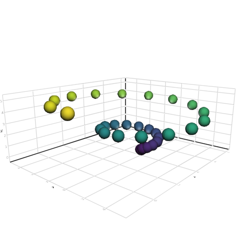
Marker sizes + Marker colors
Tags: 2d, color, documentation, markersize, scatter.
using Makie
scatter(
rand(20), rand(20),
markersize = rand(20) ./20 .+ 0.02,
color = rand(RGBf0, 20)
)
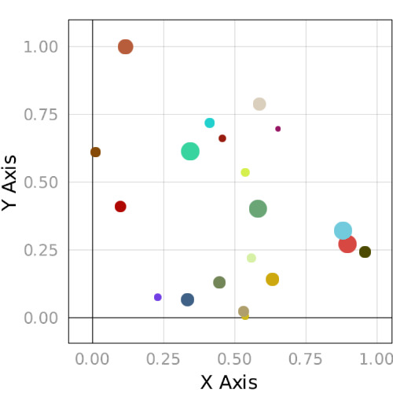
Marker offset
Tags: documentation, marker_offset, scatter.
using Makie
scene = Scene(resolution = (500, 500))
points = Point2f0[(0,0), (1,1), (2,2)]
offset = rand(Point2f0, 3)./5
scatter!(scene, points)
scatter!(scene, points, marker_offset = offset, color = :red)
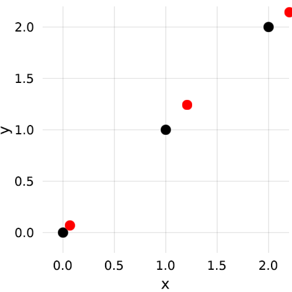
Layouting
Tags: heatmap, layout, lines, scatter, surface, vbox.
using Makie
p1 = scatter(rand(10), markersize = 1)
p2 = lines(rand(10), rand(10))
p3 = surface(0..1, 0..1, rand(100, 100))
p4 = heatmap(rand(100, 100))
x = 0:0.1:10
p5 = lines(0:0.1:10, sin.(x))
pscene = vbox(
hbox(p1, p2),
p3,
hbox(p4, p5, sizes = [0.7, 0.3]),
sizes = [0.2, 0.6, 0.2]
)